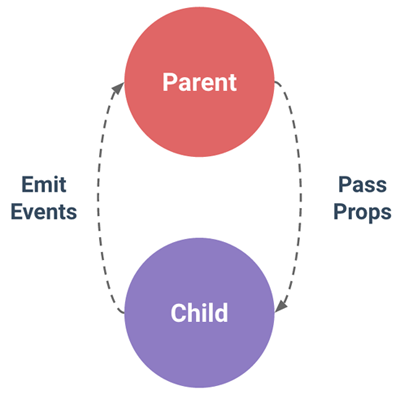

Vue 컴포넌트 상태관리에 대해서 배운다.
상태관리란? 컴포넌트간 데이터 공유하는 방법을 말한다.
부모자식 컴포넌트 간 통신은?
부모는 자식에게 props를 통해 데이터를 전달하고
자식은 부모에게 event로 알린다.
형재자매 컴포넌트 간 통신은?
이벤트 버스를 사용하여 주고 받는다.
[참조]page 62~75
1. child-component 컴포넌트 만들기.
pdtmc^2w 설정
2. child-component 컴포넌트 템플릿에는 아래 태그를 추가한다.
<div>
<button v-on:click="showLog">show</button>
</div>
3. child-component 컴포넌트 에서 버튼을 클릭하면
show-log 라는 사용자 이벤트를 발생시키고
"abc" 와 123 을 값으로 전달하시오
4. 기능 추가
자식 컴포넌트에서 받은 값을 부모 컴포넌트에
출력되게 기능을 추가하시오.

자식 컴포넌트에서 받은 값: {{mesg}}